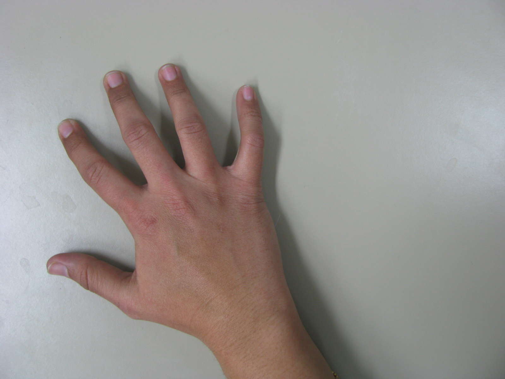
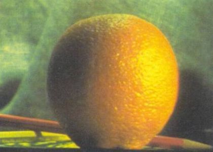
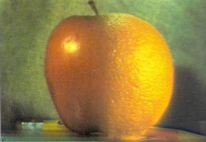
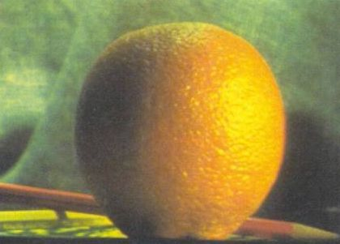
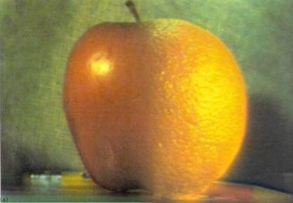
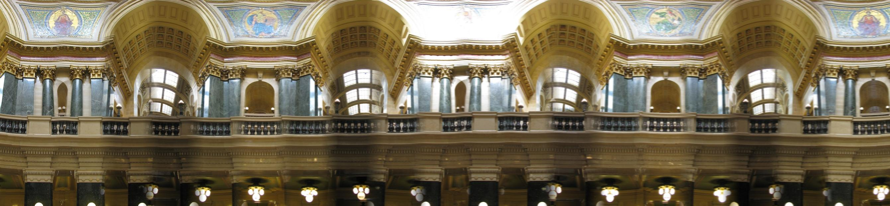
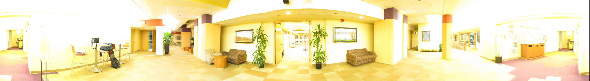
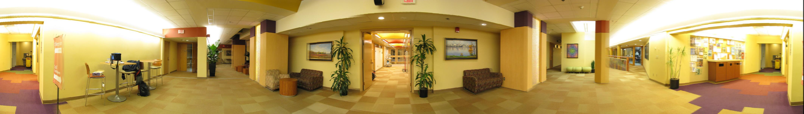
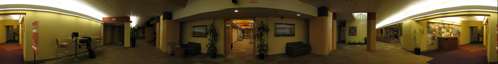
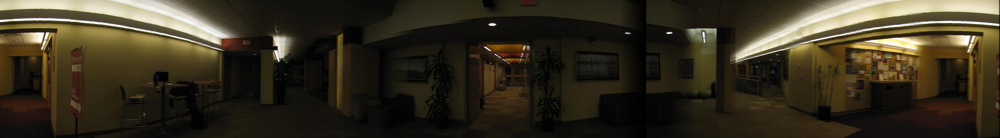

|
Table of contents
|
Bells and Whistles
We implemented the following Bells and Whistles:
- Pyramid blending
- Handling exposure differences
- Angular focal length estimation for tilted images using Scheimpflug Principle
- HDR of panorama
Pyramid Blending
We implemented pyramid blending algorithm and applied to mosaicing to generate panorama image, which is shown in Our Panorama. Following are some interesting blending results from our implementation:



 



Application of Scheimpflug Principle for angular focal length estimation
We applied Scheimpflug Principle to estimate the change in focal length when changing the angle of the camera. We acquired images of the Capitol roof at an angle approximately equivalent to 45 degrees and calculated variation in focal length using the formula from the paper:
new_f = f / cos(theta)
Following is feather blended panorama using the modified focal length:

High Definition Panorama
We took images at 7 different exposures of the CS corridor and generated the corresponding panorama. Few of the samples are shown below:




We ran our HDR code from assignment 1 to obtain the following HDR panorama:
|